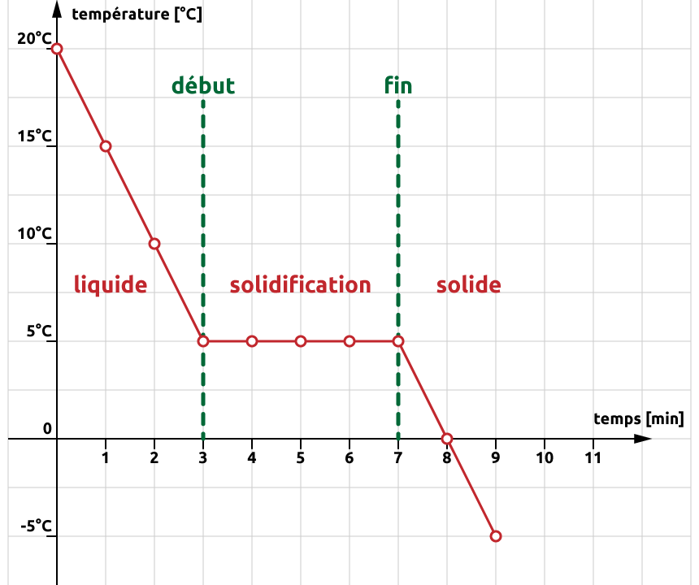

Chapitre 2 Les états de la matière
- Distinguer les trois états de la matière.
- Décrire les propriétés macroscopiques et submicroscopiques de chaque état.
- Identifier et décrire chaque changement d’état.
- Connaître les facteurs qui influencent les points d’ébullition et de fusion.
- Interpréter une courbe de changements d’états.
2.1 Les représentations en chimie
Nous allons considérer la matière de trois points de vue différents :
- point de vue macroscopique Le domaine de la matière que l’on peut voir, sentir ou toucher.
- point de vue submicroscopique Le domaine de la matière que l’on ne peut pas voir (atomes, molecules, etc.).
- point de vue symbolique Le domaine qu’on utilise pour représenter “mathématiquement” la matière (équations, symboles, formules, etc.).
Figure 2.1: Les trois niveaux de représentation de la chimie
Les propriétés macroscopiques sont régies par ce qu’il se passe au niveau submicroscopique.
2.2 Solide, liquide et gaz
La matière se trouve généralement sous trois formes physiques appelées états: solide, liquide et gaz.
| point de vue macroscopique | point de vue submicroscopique | |
|---|---|---|
| solide | Les solides ont un volume défini et une forme définie. | Les particules sont peu mobiles et très proches. |
| liquide | Les liquides ont un volume défini mais ils adoptent la forme de leur contenant. | Les particules sont proches et se déplacent lentement aléatoirement. |
| gaz | Les gaz occupent tout le volume et la forme de leur contenant. | Les particules sont séparées par de grandes distances et se déplacent très rapidement aléatoirement. |
Figure 2.2: Les différents états de la matière du point de vue macroscopique et submicroscopique
2.3 Mouvement thermique et forces intermoléculaires
La théorie cinétique de la matière nous indique que les particules qui composent la matière sont constamment en mouvement. Ce mouvement chaotique de particules est appelé mouvement thermique.
L’énergie thermique est l’énergie résultante du mouvement de ces particules. Elle est directement proportionnelle à la température de la substance. Cela signifie que plus la température augmente, plus les particules se déplacent rapidement et plus l’énergie qu’elles possèdent est élevée.
Il existe des forces d’attraction qui rassemblent les particules qui constituent la matière. Ces forces sont appelées les forces intermoléculaires. Ces forces sont d’origine électrostatique, elles sont dues à l’attraction entre des espèces chargées électriquement (positives et négatives).
- L’énergie thermique a tendance à séparer les particules qui forment la matière.
- Les forces intermoléculaires ont tendance à maintenir ensemble les particules qui forment la matière.
Les trois états de la matière sont le résultat de l’équilibre entre les forces intermoléculaires et l’énergie thermique.
Figure 2.3: Équilibre entre forces intermoléculaires et énergie thermique
Lorsque les forces intermoléculaires sont fortes et l’énergie thermique faible, la substance aura tendance à se trouver à l’état solide. Lorsque les forces intermoléculaires sont faibles et l’énergie thermique forte, la substance aura tendance à se trouver à l’état gazeux. L’état liquide résulte d’une équivalence entre forces intermoléculaires et énergie thermique.
2.4 Les changements d’état
En général, chaque état de la matière, solide, liquide ou gaz, peut se transformer en l’un des deux autres états. Ces transformations sont appelées changements d’état. Par exemple, l’eau peut subir deux changement d’état : elle fond à 0°C et bout à 100°C. Toutes les substances sont susceptibles de subir un changement d’état. Le fer fond à 1535°C et bout 2750°C.
On peut modifier l’état d’une substance en lui fournissant ou lui retirant de l’énergie thermique:
Lorsque la température augmente
- L’énergie thermique augmente.
- Les particules se déplacent plus rapidement et se libèrent des forces d’attraction.
Lorsque la température diminue
- L’énergie thermique diminue.
- Les particules se déplacent moins rapidement et les forces d’attraction les rassemblent.
Les changements d’état sont des transformations physiques. Lors d’un changement d’état une substance change la façon dont ses atomes ou molécules sont organisées sans changer les particules elles-mêmes.
- Le point de fusion est la température à laquelle une substance passe de l’état solide à l’état liquide.
- Le point d’ébullition est la température à laquelle une substance passe de l’état liquide à l’état gazeux.
L’évaporation est la transformation d’un liquide en vapeur sans ébullition. Il peut y avoir vaporisation sans ébullition de la matière.
Figure 2.4: Les noms des changements d’état
- Lequel(s) des énoncés suivants décrit ce qui se passe lorsque des particules d’eau gèlent ?
- Elles gagnent de l’énergie et de l’espace pour se déplacer.
- Elles gagnent de l’énergie et se décomposent en atomes d’hydrogène et d’oxygène.
- Elles perdent de l’énergie et s’échappent dans l’atmosphère.
- Elles perdent de l’énergie et de l’espace pour se déplacer.
- Lequel(s) des énoncés suivants décrit le mieux le comportement des particules dans un gaz ?
- Éloignées et se déplaçant lentement.
- Rapprochées et immobiles.
- Rapprochées et en vibration.
- Très éloignés et se déplaçant très rapidement.
- Lequel(s) des énoncés suivants est vrai pour gaz qui condense ?
- Le gaz libère de l’énergie thermique.
- La température du gaz augmente.
- Les particules de gaz perdent de leur liberté de mouvement.
- Les particules de gaz diminuent en taille.
- Lequel(s) des énoncés suivants est vrai pour un liquide passant à l’état gazeux ?
- La température du liquide reste constante.
- Les particules de liquide gagnent en liberté de mouvement.
- Les particules de liquide augmentent en taille.
- Le liquide libère de l’énergie thermique.
- Lequel(s) des énoncés suivants est vrai pour un liquide passant à l’état solide ?
- Le liquide libère de l’énergie thermique.
- Les particules de liquide diminuent en taille.
- La température reste constante.
- Les particules de liquide augmentent leur liberté de mouvement.
- Lequel(s) des énoncés suivants décrit ce qui se passe lorsque des particules d’eau gèlent?
- Elles perdent de l’énergie et de l’espace pour se déplacer.
- Lequel(s) des énoncés suivants décrit le mieux le comportement des particules dans un gaz?
- Très éloignés et se déplaçant très rapidement.
- Lequel(s) des énoncés suivants est vrai pour gaz qui condense?
- Le gaz libère de l’énergie thermique.
- Les particules de gaz perdent de leur liberté de mouvement.
- Lequel(s) des énoncés suivants est vrai pour un liquide passant à l’état gazeux?
- La température du liquide reste constante.
- Les particules de liquide gagnent en liberté de mouvement.
- Lequel(s) des énoncés suivants est vrai pour un liquide passant à l’état solide?
- Le liquide libère de l’énergie thermique.
- La température reste constante.
Un coton imbibé d’éther mis en contact sur la peau provoque une sensation de froid. On sait, par ailleurs, que l’éther passe facilement de l’état liquide à l’état gazeux.
Quel nom donne-t-on à ce changement d’état ?
Quelle conclusion (scientifique) peut-on mettre en relation avec la sensation de froid mentionné ?
- Quel nom donne-t-on à ce changement d’état ? La vaporisation
- Quelle conclusion (scientifique) peut-on mettre en relation avec la sensation de froid mentionné ? L’éther absorbe la chaleur du corps pour vaporiser, d’où la sensation de froid.
2.5 Les courbes de changement d’état
Figure 2.5: Courbe de chauffage de l’eau
Imaginons que l’on chauffe un bloc de glace en partant d’une température de -40°C. On place un thermomètre dans notre expérimentation et on note la température.
- En chauffant, on apporte de l’énergie thermique au système. La glace se réchauffe et sa température augmente.
- Une fois que la glace atteint 0°C, la température cesse d’augmenter et la glace commence à fondre pour former de l’eau liquide.
- En continuant de chauffer, plus de glace se transforme en eau, mais la température reste la même.
- Une fois que la glace a complètement fondu, la chaleur apportée chauffe l’eau liquide. La température recommence à augmenter.
- Une fois que l’eau liquide atteint 100°C, la température cesse d’augmenter et l’eau commence à vaporiser pour former de la vapeur d’eau.
- En continuant de chauffer, plus d’eau liquide se transforme en vapeur d’eau, mais la température reste la même.
- Une fois que l’eau s’est complètement vaporisée, la chaleur apportée chauffe la vapeur d’eau. La température recommence à augmenter.
Un changement de température et un changement d’état ne se produisent pas en même temps. Quand une substance absorbe ou libère de l’énergie, soit c’est la température qui change, soit c’est son état. En d’autres termes, la température d’une substance ne change pas au cours d’un changement d’état.
En effectuant la même expérience, mais en partant de vapeur d’eau chaude et en diminuant la température, la courbe serait inversée et aurait la même allure.
2.6 Les diagrammes de phases
Nous avons vu qu’il est possible de liquéfier un gaz à pression ambiante en le refroidissant. Pourtant, cela ne suffit pas toujours. Par exemple, on sait qu’à pression atmosphérique, le dioxyde de carbone CO2 passe directement de la phase gazeuse à la phase solide (sublimation inverse). Ainsi, pour obtenir du CO2 liquide, il est nécessaire d’augmenter la pression.
Ce genre d’informations est résumé sur un diagramme de phases qui donne les conditions (pression et température) d’existence des différentes phases d’une substance donnée.
Figure 2.6: Diagramme de phases de l’eau et du CO2 (Les échelles ne sont pas régulières)
- Quelle est la pression minimale pour que le CO2 liquide puisse exister ?
- Quelle doit alors être la température ?
- Que représente le point triple ?
- Que se passe-t-il si on prend de l’eau à 0.005 [atm] et –200° C et qu’on augmente la température jusqu’à 300° C ?
- Même question pour le CO2.
- 5.11 [atm]
- -56° C
- Les conditions dans lesquelles trois phases différentes peuvent coexister.
- L’eau ne sera jamais liquide.
- Le CO2 ne sera jamais liquide.
2.7 L’état liquide
Au niveau submicroscopique, les particules qui forment les liquides suivent des mouvements aléatoires constants. Elles peuvent être ordonnées sur de courtes portions, mais cela ne dure pas très longtemps.
Figure 2.7: Tension superficielle
Les forces intermoléculaires ont des effets différents sur une particule à la surface que sur une particule dans le corps du liquide.
- Une particule à l’intérieur du liquide est attirée par d’autres particules dans toutes les directions.
- Une particule en surface n’est attirée dans le corps du liquide que par les côtés et en dessous, mais pas au-dessus.
Cette attraction inégale fait que le liquide a un volume propre et ne se disperse pas. Ce phénomène est appelé tension superficielle.
La viscosité est la résistance à l’écoulement d’un liquide. Elle dépend des forces intermoléculaires et de la température. Les liquides ayant des forces intermoléculaires fortes ont tendance à avoir une viscosité élevée.
La capillarité est la tendance qu’a un liquide à monter le long d’un tube étroit. Elle est causée par la compétition entre les forces intermoléculaires dans le liquide et les forces d’attraction entre le liquide et la paroi du tube.
Figure 2.8: La capillarité
2.8 L’état solide
Au niveau submicroscopique, les solides peuvent être de deux types - amorphe ou cristallin.
Figure 2.9: Solide amorphe (Verre) - Solide cristallin (Quartz)
2.8.1 Les solides amorphes
Les particules formant les solides amorphes ne sont pas ordonnées sur de grandes portions de l’espace. Leur structure est irrégulière et ressemble plus à la structure d’un liquide qui serait figé.
Les solides amorphes n’ont pas un point de fusion distinct. Ils deviennent simplement plus souple lorsque la température augmente. Le verre, le caoutchouc ou le beurre sont des exemples de solides amorphes.
2.8.2 Les solides cristallins
Les particules formant les solides cristallins sont assemblées les unes par rapport aux autres de façon régulière sur de vastes portions de l’espace. Cette structure tridimensionnelle est appelée réseau cristallin.
Une maille est un volume de cristal, qui, lorsqu’il est répété dans les trois dimensions de l’espace, permet d’obtenir le cristal tout entier.
Figure 2.10: 3 mailles de réseaux cristallins classiques (CFC: cubique à face centrées, CC: cubique centré, HC: hexagonal compact)
2.8.3 Allotropes
L’allotropie est la propriété qu’ont certains corps à former des cristaux de différentes formes, appelés allotropes de cette substance. Par exemple, le diamant, le graphite et les fullerènes sont des formes allotropiques du carbone: formés du même élément mais dont la structure cristalline est différente.
Figure 2.11: Trois formes allotropiques du carbone (graphite, diamant, fullerène)
2.9 Exercices supplémentaires
- Pourquoi en montagne le point d’ébullition de l’eau diminue-t-il par rapport à celui observé au niveau de la mer ?
- Expliquez ce que sont les bulles qui apparaissent lorsque l’eau bout.
- Qu’est-ce que la condensation ? Citez un exemple de la vie pratique où vous pouvez observer de la condensation.
- Pourquoi met-on du sel sur les routes en hiver ?
- En montagne la pression atmosphérique est plus basse ce qui abaisse le point d’ébullition de l’eau.
- Les bulles, visibles à l’intérieur du liquide, sont des bulles de vapeur d’eau.
- Passage de l’eau de l’état gazeux à l’état liquide. Rosée du matin, buée sur les vitres, gouttelettes d’eau sur une boisson sortie du réfrigérateur, …
- Les impuretés abaissent le point de fusion d’une substance. Le sel abaisse le point de fusion de l’eau, ainsi elle gèlera à une température inférieure à 0° C.
Complétez le tableau suivant en décrivant le changement d’état. Le tableau a été partiellement complété pour vous aider.
| Changement d’état | libère ou absorbe de la chaleur | |
|---|---|---|
| condensation | libère | |
| sublimation | ||
| vaporisation | liquide \(\rightarrow\) gaz | |
| fusion | absorbe | |
| solidification | ||
| sublimation inverse |
condensation / gaz \(\rightarrow\) liquide / libère
sublimation / solide \(\rightarrow\) gaz / absorbe
vaporisation / liquide \(\rightarrow\) gaz / absorbe
fusion / solide \(\rightarrow\) liquide / absorbe
solidification / liquide \(\rightarrow\) solide / libère
sublimation inverse / gaz \(\rightarrow\) solide / libère
Connaissant les points de fusion et d’ébullition des substances suivantes, donnez l’état physique de la substance à température ambiante (25° C).
| substance | point de fusion | point d’ébullition | état physique à 25° C |
|---|---|---|---|
| eau | 0° C | 100° C | |
| méthane | -182° C | -162° C | |
| fer | 1535° C | 2750° C | |
| mercure | -39° C | 357° C | |
| oxygène | -218° C | -183° C | |
| or | 1063° C | 2856° C |
eau : liquide
méthane : gaz
fer : solide
mercure : liquide
oxygène : gaz
or : solide
On refroidit un liquide, tout en mesurant régulièrement sa température. Voici les résultats obtenu :
- Temps (en min) : 0, 1, 2, 3, 4, 5, 6, 7, 8, 9
- Température (en °C) : 20, 15, 10, 5, 5, 5, 5, 5, 0, -5
- Tracez le graphique représentant l’évolution de la température du liquide en fonction du temps lors de son refroidissement.

- Quel changement d’état à lieu ici ?
- Délimitez, sur le graphique, le début et la fin du changement d’état et indiquez les états physiques observés.
- Ce liquide est-il de l’eau? (Justifiez)
- En vous aidant des informations ci-dessous, déterminez quelle est la substance refroidie.
Température de solidification
- Acide lactique : 17° C
- Anéthole : 20° C
- Cyclohexane : 5° C
- Quelle est la température de fusion du cyclohexane ? Justifiez.

- La solidification
- Non, car l’eau solidifie à 0° C.
- Le cyclohexane, température de solidification = 5° C.
- 5° C, température de fusion = température de solidification.